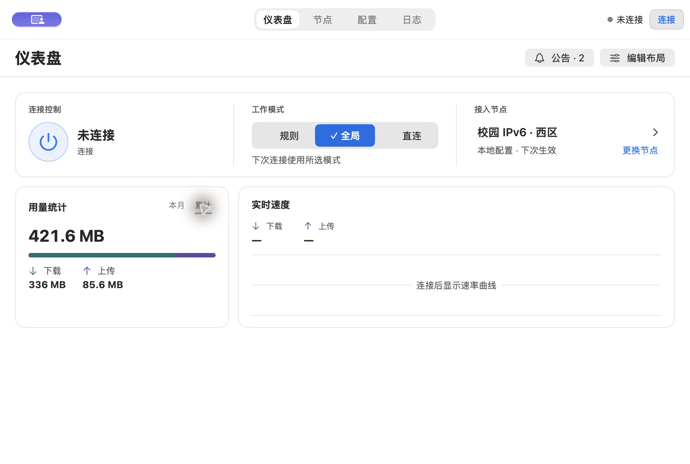

ClashMax直接竞品 · macOS 原生 SwiftUI · 官方截图与固定源码
左侧用系统列表承载导航；顶部工具栏右侧常驻规则、全局、直连。首页第一块横跨正文，运行状态、电源、配置与速率属于同一组。其下才分到当前节点、公网 IP、流量曲线和代理组。
它的节点页把浏览某个节点和实际启用节点分开，还给代理组保留独立一列。FreeV6 值得借的是首页主次，以及浏览与生效的语义；只有一个校园接入组时，再加一列组导航会挤压节点名称。
FreeV6 下一版最值得改的是首页的阅读顺序。先让人看清连接状态、当前或下次使用的节点和一个主动作，再让人选模式、看流量。把这几件事做出主次，比继续调整圆角更能改变观感。
主样本为 8 款，其中 6 款直接同类，2 款用于对照相邻任务。另核对 1 个离线行为反例。与 FreeV6 同样操作 Mihomo、模式和节点的客户端用于研究主页与节点；WireGuard 与 Mullvad 用于研究连接状态和对象选择。取材限于上游 GitHub、开发者官网、官方 Mac 商店和 Apple 的界面规范。下文分别标出官方 Mac 截图、跨平台桌面截图和仅有源码的观察。


点击图片查看原图。第三方图片从各自官网加载，FreeV6 自身截图随仓库保存。本文没有安装竞品；动画手感、真实性能和新手完成时间不能从截图推出。文中的布局建议和验收目标是对 FreeV6 的判断。
左侧用系统列表承载导航；顶部工具栏右侧常驻规则、全局、直连。首页第一块横跨正文，运行状态、电源、配置与速率属于同一组。其下才分到当前节点、公网 IP、流量曲线和代理组。
它的节点页把浏览某个节点和实际启用节点分开，还给代理组保留独立一列。FreeV6 值得借的是首页主次，以及浏览与生效的语义；只有一个校园接入组时，再加一列组导航会挤压节点名称。
面板上方先是状态和工具，下面是三等分的规则 / 全局 / 直连，再下一层才是节点、分流、连接、日志、设置。模式用有底色的选中块，页面用短下划线。头部和模式选项位于滚动视图之外；固定提交显式关闭整页切换动画。
这是最值得借的细节：两种选择各有一套视觉语法，即使上下排列也认得出。它的列表右端对齐延迟与测速，而头部多个没有文字的图标对新用户并不直观。原图内标为 v0.3.4，仅用来判断图示版本的样式。
浅色图左侧是图标加文字的导航，底部留有小速率图。代理页的模式选择位于页头，与代理集合入口分开。主体每一行先给组名，再给组类型与当前节点，右端负责展开。节点被选中时有前导色条，点击延迟可单独重测。
适合借节点列表的稳定扫描顺序、模式与组导航的分工。FreeV6 默认只有少量组时，可以直接露出节点；把单组折叠起来会多一次点击。上游图有 Mac 风格窗口按钮，但未标注截图平台。
官方合成图同时展示电脑和手机。MacBook 中，当前出口与运行状态占据较宽首块，旁边为各有数值和折线的上下行区域；模式另起一组，与系统代理、TUN 开关区分。源码也分别定义了桌面与手机的流量布局。
这说明卡片本身可以好用，前提是给当前出口足够宽度。FreeV6 可学「当前位置 + 状态 + 一个动作」以及方向与各自数值靠近，少量校园节点无需搬入每张指标卡、IP 质量与连接表。
窗口采用左侧栏和右上短工具区。总量、连接数等先压成一条横向摘要，最大的模块留给速率曲线。菜单栏另有紧凑面板，上方是曲线和数值，中间是开关、出站模式和策略组，底部才是打开仪表盘及设置。
适合借统计区的主图与次指标比例，以及完整窗口和菜单栏的分工。菜单里的内存、连接数、多个策略组服务于高级诊断；FreeV6 的快菜单应优先排连接和换节点，内存与连接数可留在诊断页。不能用闭源产品的宣传推断刷新性能。
窗口左栏用名称和状态点列隧道，右栏展示选中对象详情。源码中单击浏览，双击启停。系统菜单在隧道数不超过 10 时直接展示，更多时才收进子菜单。
FreeV6 能借的是选中与运行分开表达、小列表少一步、大列表少噪声。节点没有必要像 VPN 隧道那样默认占用一整栏协议字段；鼠标双击也不宜成为唯一的启用方式。
断开页把状态文字、地点、选择地点与连接按钮放在同一区域。连上后仍显示明确的文字状态，进一步的连接细节按需展开。选址器可从国家继续展开到城市与服务器。
FreeV6 最值得借的是把“选哪里”和“是否连接”做成两个可发现的入口。Mullvad 文档说明点选国家即可连接；FreeV6 已经承诺离线预选，因此应保留单独的连接动作。校园东、西区区别用名称比地图更直接。
出站模式父项显示当前值，三种模式互斥勾选；系统代理开关另列。每个代理组显示正在使用的代理，进入组后能选节点，测速与候选项之间有分隔。上下行状态项隐藏时跳过刷新，格式化数值未变也跳过。
FreeV6 主窗口仍应直接给用户三个模式按钮。菜单栏则适合用「模式 · 全局」「节点 · 西区」表达当前位置。按数据变化决定是否刷新值得借鉴，不能据此声称竞品切页更流畅。

| 部位 | 当前画面与代价 | 建议保留或改变什么 |
|---|---|---|
| 固定顶栏与右侧 | 中央四个目的地看起来像一排模式按钮；下面还有页标题、公告、编辑布局。右上常见的两个词是「未连接」「连接」，首页又完整重复一遍。 | 始终保留跨页能操作的固定顶栏。宽窗优先试可折叠侧栏，顶栏留页名和小而明确的会话动作。首页连接区在视野内时减轻重复入口，滚走或切页时仍能从顶栏连接。公告和布局编辑降为次要命令。 |
| 连接与模式 | 电源图标是最大的图形，意味偏向启停，旁边蓝色模式的视觉重量却更高。三栏均分使人难以把「我的状态」和「我选择的策略」读成一个整体。 | 首行由状态、节点和一个有文字的连接动作组成。下一行保留三个直接可点的「规则 / 全局 / 直连」，只高亮当前选择；未连接时一次说明「下次连接使用」。 |
| 接入节点 | 仪表盘同时有箭头与「更换节点」链接式文字。节点页同一名称出现三次，测速表盘图标距离长名称很远，且与未测文字邻接。 | 首页只留一个有足够点击范围的节点入口。完整页以列表为主体，组名「校园 IPv6」展示一次。右列对齐延迟，单节点测速有明确按钮名称；整组测速放在列表工具区。状态标签只用在能区分偏好和实况的地方。 |
| 用量与实时速度 | 断开时亮色占比条和大面积空坐标占据下半屏。本月 / 累计虽已有下划线，但字相对数字和图表很小；切换区域离大数字远。 | 把两个周期与总量放进同一阅读组。周期直接可点，保留上传、下载分项，移除重复年月与「累计用量」。上传、下载在速率图和统计区用一致的箭头和色彩。断开保留图标与基线，空图收矮；采样后扩到合适高度。 |
| 动效 | 前轮本机窄窗连续切页，曾测到 85.9 ms 的最长主线程显示回调间隔。选中底板移动本身不能解决页面首次展示、列表刷新时的全部卡顿。 | 按压当下先有反馈；模式变更等待确认时只给被点项进度；连续切页允许打断；减少动态效果时改靠字重与明暗。使用实测比较首次与再次切页、在线与离线；不把静态竞品截图当成动画依据。 |
| 设置与日志 | 设置窗口已经有系统侧栏和分组层次，比首页更有一致性。日志的清空范围涉及所有级别，已有确认，但多个动作容易抢占一行。 | 保留设置侧栏的正确位置、系统键盘焦点与显示／隐藏行为。日志先给等级过滤和暂停／继续，保留可发现的「清空…」和独立导出。仅在确认时强调破坏性动作，清空后显示后续新事件。 |
我倾向于「轻量原生主窗口」。用 ClashMax 的状态层次做首页、WireGuard 的列表逻辑做节点页、ClashX.Meta 的短命令做系统菜单。这样既能照顾每天只想换节点的人，也保留了排查网络问题的入口。以下是候选方向，仍需视觉原型验证。
| 可选方向 | 什么时候最好用 | 对 FreeV6 的取舍 |
|---|---|---|
| 轻量原生窗口 | 频繁切模式、换节点，偶尔查用量。 | 首选。把连接与当前路径放在首位，保留可搜索节点页和跨页连接操作。代价是要认真处理窄窗与侧栏折叠。 |
| 遥测仪表盘 | 用户持续盯趋势、资源、异常域名。 | 借曲线和数值的排布。大量 KPI 在日常首屏会压过连接意图，更适合深入统计或自选布局。 |
| 菜单栏优先 | 人在别的应用，只想看状态或快速连接。 | 用于补充主窗口。把长节点列表、日志筛选和清空留在可搜索、可用键盘操作的完整窗口。 |
920 pt 先试可折叠左栏，720 pt 先试收起侧栏，固定顶部仍可到达四个目的地，保留 ⌘1–⌘4。两个宽度都要能直接看到模式与节点入口。同时保留固定顶部导航的候选稿，用相同任务比较后再定。Apple 也明确指出，窄窗可优先选择更紧凑的导航。Apple 侧栏规范 · 工具栏规范
| 实际情形 | 首页与列表应表达什么 | 用户操作的结果 |
|---|---|---|
| 断开，指定西区 | 「下次连接 · 西区」，列表将西区标为「预选」。 | 选东区只更新偏好，连接仍由单独的按钮触发。 |
| 在线，自动选中东区 | 「当前使用 · 东区」，策略为「自动」。 | 不把东区画成人为固定的首选。 |
| 在线，要求换到西区 | 西区一行显示进行中，服务确认后改为「使用中」。 | 失败时原节点维持实际使用状态，错误和重试出现在西区旁。 |
| 旧偏好已不在列表 | 展示可用组和实际节点，说明上次首选不可用。 | 保留重新选择或恢复自动的出口。 |
先出同一套真实文案、数据和窗口尺寸的两版原型。A 用固定顶部导航，B 用宽窗可折叠侧栏；两版共享连接区、模式区和节点列表。这样用户偏好可以归因到导航和层次，而不会被不同配色、文案或样例数据干扰。
以上是拟定的下一轮测试任务。本轮交付为调研报告；尚无竞品实机帧率对比、用户偏好投票或新原型测试结果。